● Hyderabad
Praveen Chandrahas
I like to build things, think about how intelligence and energy / entropy relate (on a cosmic scale - more below), and tinker with stuff.
I have spent most of my working life moving between engineering, running teams, and helping start organisations. Much of that has been in and around the free software movement in Telugu-speaking regions, and in building technology that works in local languages and for working people.
I am more at home with systems, electronics and integration than with writing elegant code. I like understanding how a thing actually works, and checking that it does. I live here with my family and a beagle named Max.
01 Work
Two things occupy most of my working time at the moment, both built with co-founders.
Inference · infrastructure
Making AI inference tractable
Work on making AI inference cheaper and more tractable to run on infrastructure an organisation controls.
Education · skilling
Applied AI skilling
An AI-skilling effort aimed at practitioners and faculty who need to use these tools well, not just read about them.
Before these, I co-founded an enterprise AI company in 2021 and have since left it.
02 Research
02 Research
On the side, I am building a research programme around a question at the intersection of thermodynamics, the origin of life and intelligence:
The starting point is not that entropy makes life or intelligence inevitable. The second law constrains all physical processes, but it does not by itself explain why particular organized systems arise. I am trying to make the proposed connection testable, one transition at a time: from stellar energy and planetary radiation, to chemical disequilibrium, to catalytic organization, and eventually to replication and information-processing agency.
Research programme · thermodynamics
Thermodynamic Emergence
A research repository examining whether sustained planetary free-energy flows can support increasingly organized dissipative structures. It separates thermodynamic accounting from hypotheses about self-maintenance, replication, evolution and intelligence.
Simulation · downstream research
agency-from-gradients
A separate simulation line exploring energy-acquisition strategies and agency in simplified worlds. It starts with existing entities; it does not model the origin of life or the spontaneous emergence of replicators.
Current evidence · model results, not empirical proof
What the models show so far
- A zero-dimensional star–planet radiation ledger closes its energy balance under explicit blackbody, Lambertian-reflection and graybody-emission assumptions.
- A seeded single-autocatalyst model amplifies X relative to its background control, but its initial catalyst and reverse-reaction seed source are explicit.
- A finite-resource mutually catalytic network accelerates conversion, but the batch relaxes toward equilibrium; severe catalyst removal exposes weak recovery when the pre-event state and remaining food are properly matched.
- A continuously driven abstract reactor maintains a non-equilibrium steady state. Mutual catalysis raises stationary X+Y abundance by about 176-fold relative to a matched-flow null, but the uncatalysed reactor also reaches the operational steady-state criterion.
- In the open-reactor baseline, 99% catalyst removal is followed by near-complete abundance recovery. This still depends on surviving catalysts; tested positive trace-feed levels have little effect. Longer observation is needed to re-establish the full operational steady state.
These are conditional results from abstract deterministic models. They do not demonstrate seed-free emergence, life, biological self-repair, replication with heredity, or intelligence. The next tests target washout and extinction boundaries, and stronger stability analysis.
03 Tinkering
These are hobbies. I do them for the satisfaction of understanding each part, not to chase a particular outcome.
Audio · DSP
A software-defined home theater
Building the audio pipeline stage by stage and measuring each one. The interest is in verifying what each component does, not in audiophile claims.
Code and notes →Optics · sky
A DIY planetarium and a smart telescope
Partly for myself and partly to share the night sky with family.
Outdoors
Dark-sky trips
The Western Ghats and the forests of Telangana are my favourite places to go and look up.
04 Musings
Occasional essays.

Essay
Curiosity killed the cat. So we killed curiosity.
Debunking can't keep up with the claims. A case for playing the long game instead: keep science, and the wonder of it, alive in the open.
Read the essay →